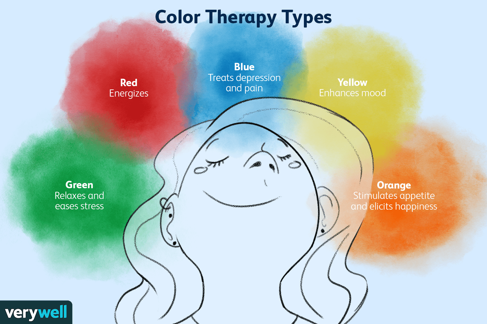

| What is Color Therapy?
Types of Color Therapy What Color Therapy Can Help With |
 |
What is color Therapy?Color therapy, is also know as chromoatherapy, is a form of therapy that uses color and lights to treat certtain mental and physical health conditions. WE can trace this form of therapy baback to the ancient Egyptians. They made use of sn-filled rooms with colored glasses for therapeutic purposes. Types of Color TherapyIn color therapy, different colors are thought to be able to treat various conditions. Color therapy belive that a lack of a particular color in your body might be responsible for your living condition. Here's a list of the most common colors used during color therapy and how we can use them.
What Color Therapy Can Help WithColor therapy has a host of uses. There's some evidence tosuggest to suggest that can help with some of the following conditions:
|
|